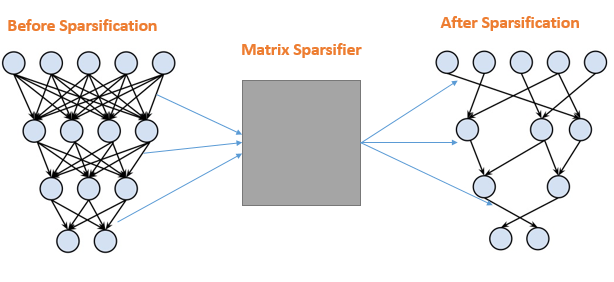

{{ page.title }}
Neural Net Scarification through Matrix Sparsifiers
|  |
Deep neural networks with very large number of parameters are considered to be very powerful algorithms to solve many ill posed problems but large number of parameters makes them computationally expensive and prone to over-fitting. Many algorithms such as dropout etc. have been known that are used to sparsify neural networks to avoid these issues. In this project, we have used some state of the art matrix sparsification methods to sparsify overall neural network i.e. weights of intermediate layers are taken as a matrix and than sparsified such that change in matrix in terms of metric is minimized. Sparsification shows interesting results such as these algorithms was able to remove redundancy successfully without hurting performance. Similarly, the decrease in the number of epochs for training increases sparsification by many folds and as the number of weights for a layer increases, sparsification also increases by many folds. [Link]() |
{kind=link}